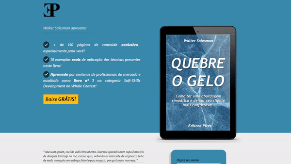

eBook - Landing Page
Desenvolvi esse projeto com o objetivo de praticar meu CSS e melhorar minhas noções de estética.

Blog com Banco de Dados
Desenvolvi esse projeto com mentoria da Dra. Angela Yu durante o seu Bootcamp. O site utiliza de EJS, ExpressJS, MongoDB, Mongoose e NodeJS. Foi uma experiência muito enriquecedora trazer todo o back-end do site à vida do ZERO.

Lista de Afazeres com Banco de Dados
Também durante o Bootcamp da Dra. Angela Yu. Desenvolvi essa lista de afazeres utilizando praticamente o mesmo stack tecnológico. Gostei do resultado deste projeto, embora acredite que o mundo não precisa de mais listas de afazeres.